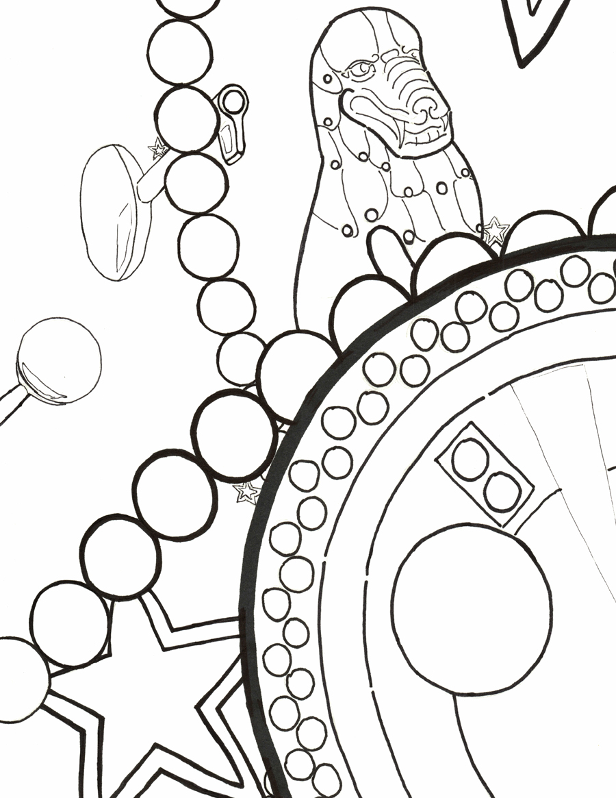
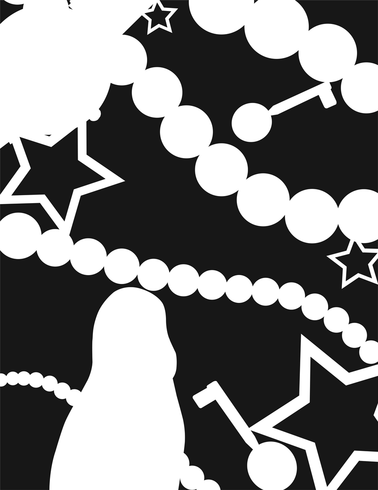
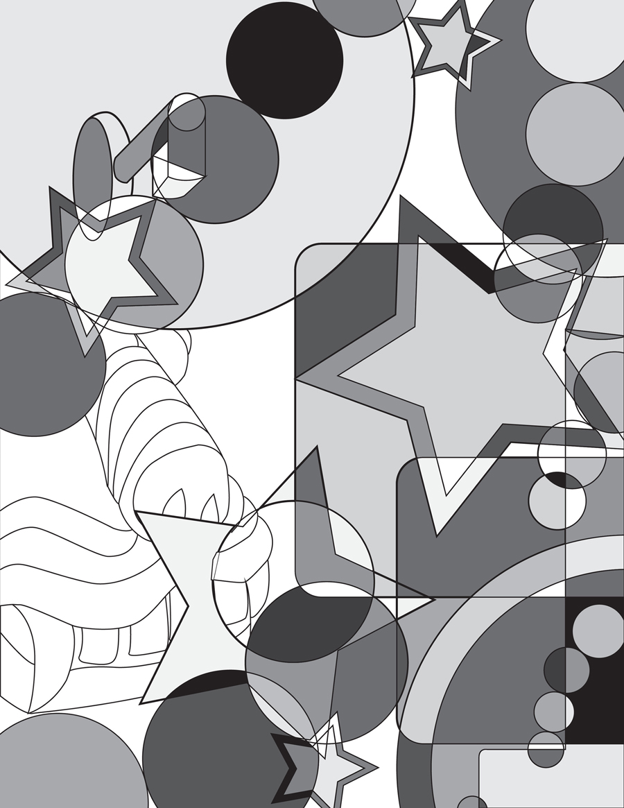

Museum Triptych




These are four compositions I designed from five items: a part of a Guanyin statue in The Metropolitan Museum of Art, my watch, earrings, key, and jewelry.
The designs are created starting with using pencil and pen, Adobe Illustrator black and white, Adobe Illustrator values, and mixed media added onto values.